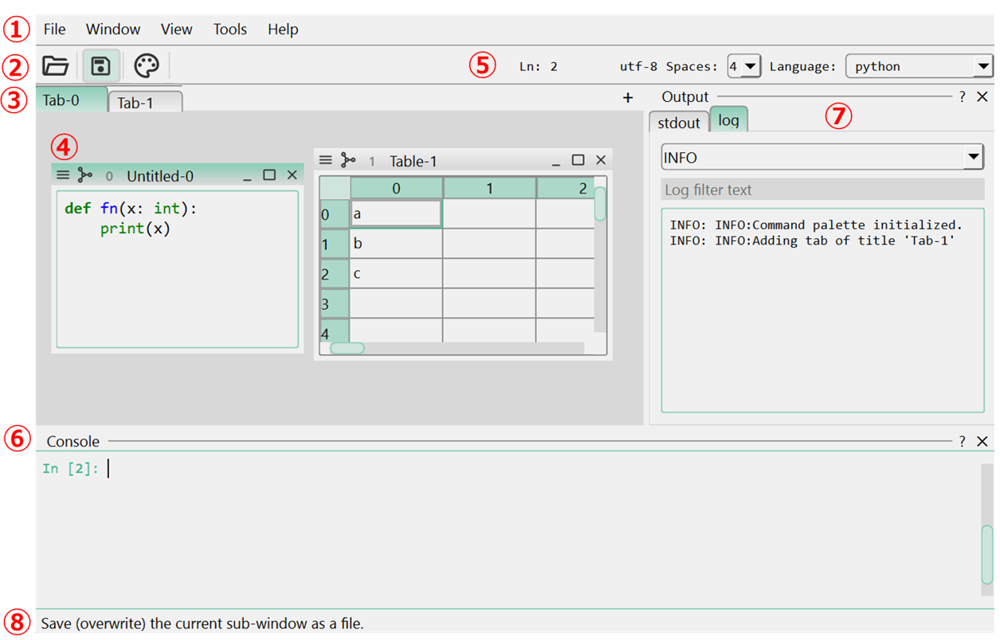
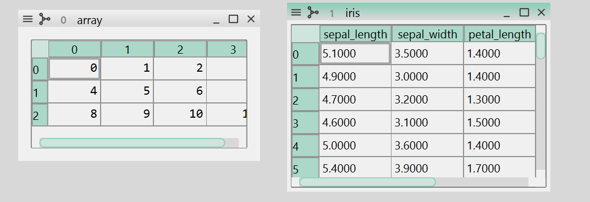
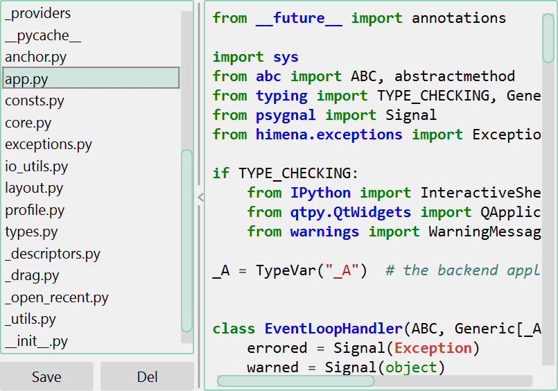
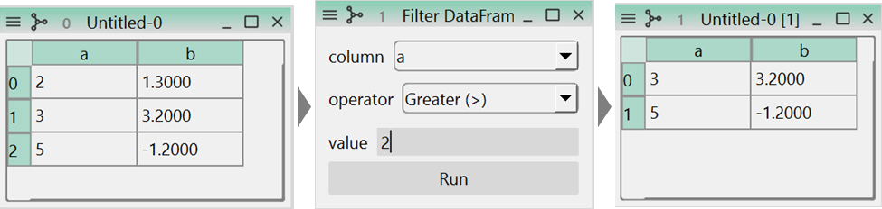
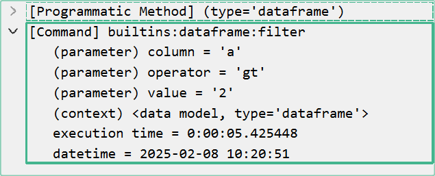

Basics
Application Design
Appearance
himena GUI has components as shown below.

- Menu bar. It contains most of the registered commands in the application.
- Tool bar. It contains frequently used commands.
- Tab bar. Each tab contains a sub-window area where widgets are placed.
- Sub-window. Each sub-window contains a widget as its content.
- Control widget. Each widget has a control widget that provides functionalities specific to the widget.
- Python interpreter console. A console widget that can execute Python codes.
- Dock widget. Widgets docked to the main window. These widgets are usually added by plugins. The Python interpreter console is also a dock widget.
- Status bar. It shows simple one-line messages.
Sub-window
A sub-window usually represents a single data, such as a ndarray or DataFrame.
Therefore, data processing is usually done by taking sub-windows as input and output.

Each data is wrapped by a WidgetDataModel object,
which is tagged with some GUI-related information, so that the application understands
how to display, save and track the data.
In the Python interpreter console (Ctrl+Shift+C), variable ui is available as the
handler of the main window.
from himena.types import WidgetDataModel
import numpy as np
data = WidgetDataModel(value=np.arange(10), type="array", title="my array") # (1)!
win = ui.add_data_model(data) # (2)!
- Create a WidgetDataModel object. To interpret the data as an array, set the
typeattribute to"array". - Add the data model to the application as a sub-window.
More simply, you can just call ui.add_object method to directly add an object to the
application.
win = ui.add_object(np.arange(10), type="array", title="my array")
Data can be retrieved from the sub-window by calling to_model method.
win.to_model()
WidgetDataModel(value=<ndarray>, source=None, type='array', title='my array')
win.to_model().value
array([0, 1, 2, 3, 4, 5, 6, 7, 8, 9])
Opening and Saving Files
New file
Press Ctrl+N and you will see a command palette pops up. This palette contains many commands that are related to adding new items to the application. This category includes
- Empty window, such as a text or table.
- Opening a sample data.
For example, the "New Text" command will add a new text editor sub-window to the current tab.
Open files from the local disk
himena supports several ways to open files from the local disk.
(1) Open a file as a sub-window
This is the most common way to open a file. You can open a file from "File" menu press Ctrl+O or drag-and-drop the file to the application.
Whether the file can be opened, and the opened data can be displayed as a widget,
depends on the plugins installed in the application profile. For example, himena
built-in readers cannot open TIFF files, but a TIFF reader is available in the
himena-image plugin.
Data analysis without widget plugin
If himena cannot find a widget to represent the data that has just been read, you
will see a widget saying "No widget registered for ...". This does not mean himena
cannot read the data. You just don't have a "nice" way to visualize the data. You
can still use the internal data model in the application.
(2) Open a folder as a sub-window
A special built-in widget can display a list of WidgetDataModel as a nested widget.
Opening a folder will read the folder contents as a collection like below.
This command is available from the "File" menu, Ctrl+K → Ctrl+O, or
drag-and-drop the folder to the application.

(3) Open a group of files as a sub-window
Instead of opening a folder, you can open a group of files as a sub-window just like (2).
Saving files to the local disk
You can save the data in the sub-window to the local disk by selecting "File" → "Save" or pressing Ctrl+S. Whether the data can be saved to the specified format depends on the plugins installed in the application profile.
Data Processing
Most of the functions for data processing are defined by functions that take a
WidgetDataModel as the input and another WidgetDataModel as the output.
For example, starting from the data below
df = {"a": [2, 3, 5], "b": [1.3, 3.2, -1.2]}
ui.add_object(df, type="dataframe")
you can find "Filter DataFrame ..." command in the model menu. This command will open a window for the parameter input, filter the data frame and show the result in a new sub-window.

The history of the data processing is recorded to the WidgetDataModel. You can open it
from the "Show workflow graph" command in the window menu.

Note
The workflow is just a WidgetDataModel with type "workflow". Therefore, this
operation is just a data processing like any other operations.
Adding Custom Widgets
Currently, himena supports Qt as its GUI backend. Any Qt widgets can be added to
the application using add_widget() method.
from qtpy.QtWidgets import QLabel
label = QLabel("Hello, world!")
ui.add_widget(label, title="My Label")
If you have a widget wrapper of a Qt widget, it can also be added by defining the
native_widget() interface method.
class MyLabel:
def __init__(self, text):
self._qt_label = QLabel(text)
def native_widget(self):
return self._qt_label
label = MyLabel("Hello, world!")
ui.add_widget(label, title="My Label Wrapper")
Using magicgui
Because himena depends on magicgui in many places, magicgui widgets can
be directly used without the native_widget() method.
from magicgui import magicgui
@magicgui
def my_func(x: int, y: str):
print(x, y)
ui.add_widget(my_func, title="My MagicGUI")
Alternatively, you can add the widget as a dock widget using add_dock_widget().
label = MyLabel("Hello, world!")
ui.add_dock_widget(label, title="My Label Dock Widget")
These rules also apply to the widget plugin system. See here for more details.